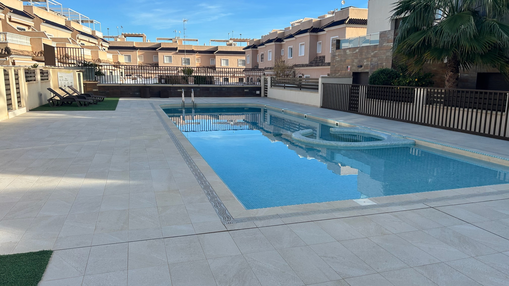
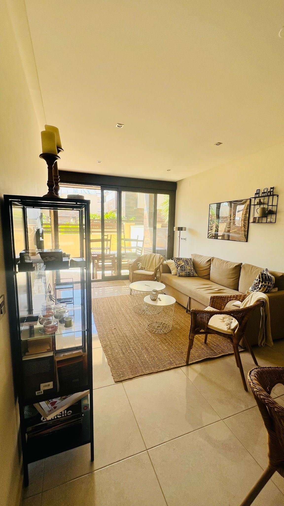
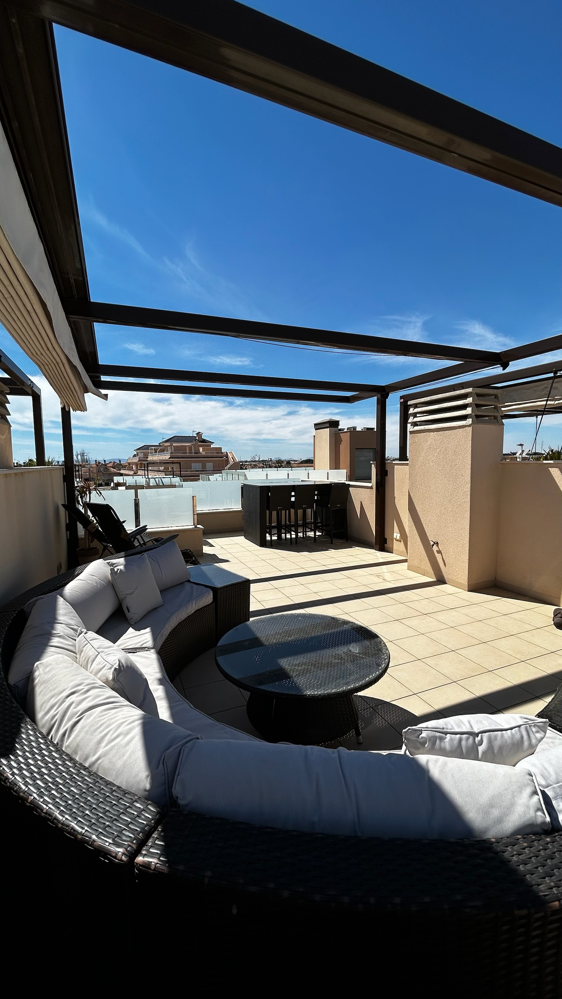
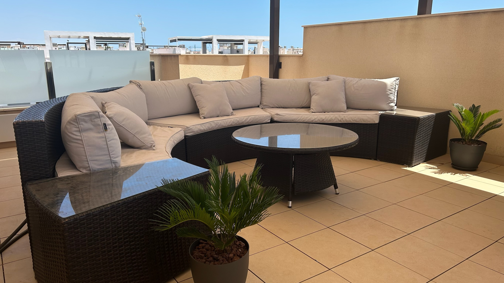
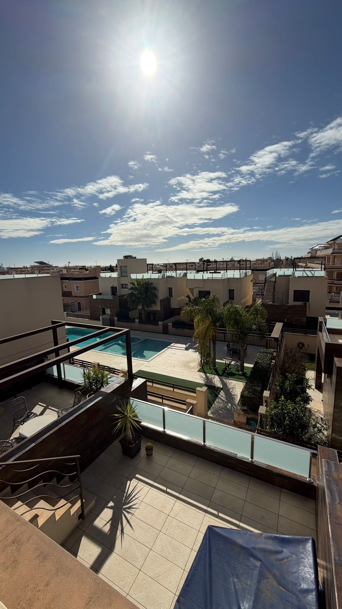

Om huset
Mycket rymligt och trevligt radhus med 3 sovrum samt 2 badrum i ett modernt område nära fina stränder samt en fantastiskt strandpromenad.
- 3 sovrum (1 med dubbelsäng, 2 med 2 enkelsängar per rum).
- 2 kompletta badrum, båda med dusch samt golvvärme.
- Välutrustat kök med diskmaskin, mikrovågsugn, vattenfilter (drickbart kranvatten).
- Vardagsrum inrett med matplats samt soffa och TV.
- AC finns i alla rum och internet via fiber.
- Stor takterrass med pergola, loungegrupp och matbord för 6 personer (havsutsikt).
- Stor terrass utanför master bedroom med loungegrupp och utsikt över poolen.
- Uteplats på entréplan med matgrupp, grill och delvis tak/markis (utgång till pool).
- Gemensamt poolområde med solstolar och pergola.
- Närmsta strand ca 350 meter bort.
- Garageplats i källaren ingår.
Bilder på huset










Kök
Sovrum 1 (Master)
Sovrum 2
Sovrum 3
Badrum 1
Badrum 2
Uteplats entré
Övrigt